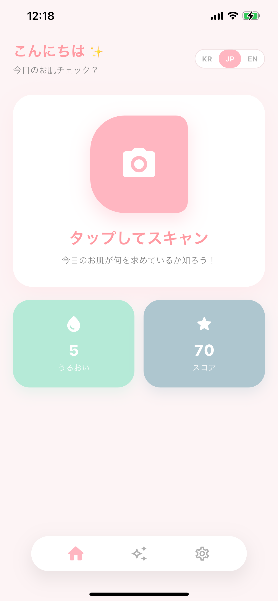
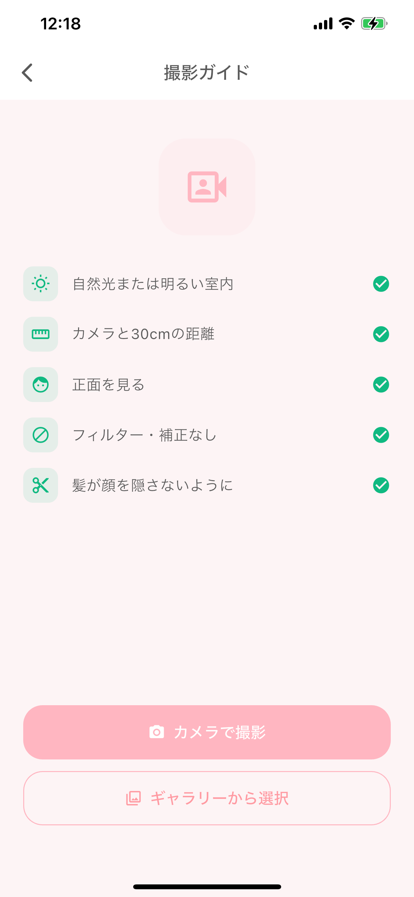
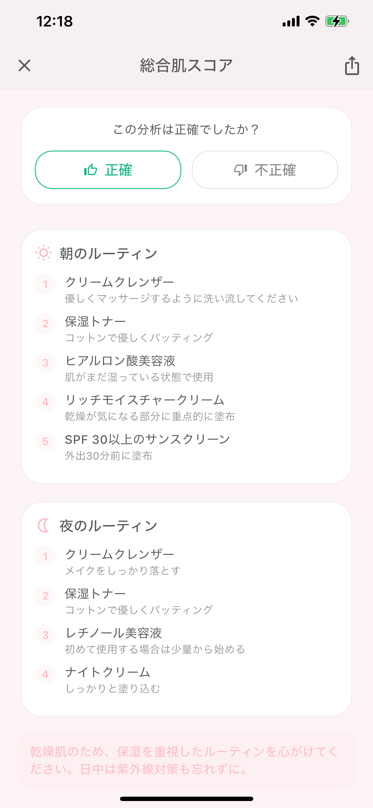

スキンスキャン
写真1枚あれば十分。
AIが今日の肌を分析し、総合スコアとあなたに合ったルーティンをお届けします。
写真1枚あれば十分。
AIが今日の肌を分析し、総合スコアとあなたに合ったルーティンをお届けします。
スキンスキャン(SkinScan)は、顔写真1枚で肌の状態を分析するAI肌分析アプリです。高価な測定機器や店舗への来店なしに、スマートフォンのカメラだけでニキビ・色素沈着・乾燥・シワ・毛穴といった主要な項目をチェックし、0〜100点の総合肌スコアを確認できます。毎日の手軽なセルフチェックで、肌の変化を記録する習慣づくりをサポートします。
使い方は簡単です。ホーム画面で撮影ボタンを押し、自然光の下でカメラを正面から見つめるだけで、約10秒で分析が完了します。より詳しく知りたいときは、正面・左・右の3枚を撮影する精密分析で左右の非対称までチェックできます。撮影ガイドが明るさ・距離・角度を案内し、毎回同じ条件で撮影できるようにサポートします。
分析が終わると、項目ごとのスコアとともに過去の記録と比べてどれだけ改善したかの推移を表示し、あなたの肌に合った朝・夜のスキンケアルーティンや、取り入れたい成分(ヒアルロン酸・セラミド・ビタミンCなど)、避けたい成分まで提案します。スキンスキャンは現在リリースを準備しており、iOSとAndroidで間もなくお使いいただけます。
撮影1回から始めるスキンケア
写真1枚でニキビ・色素沈着・乾燥・シワ・毛穴を分析。正面1枚のクイック分析は約10秒で完了します。
肌の状態を0〜100点でひと目で確認。項目ごとの評価で、どこをもっとケアすべきかが分かります。
過去の記録と比較してスコアの変化を追跡。スキンケアの効果をデータで確認できます。
正面・左・右の3枚を撮影し、左右の非対称までチェックする精密分析。すばやく詳しい結果が得られます。
あなたの肌に合った朝・夜のルーティンと、取り入れたい成分・避けたい成分を提案します。
한국어・English・日本語に対応し、アプリ内で言語をすぐに切り替えられます。
やさしく直感的なピンクトーンのUI

ホーム

撮影ガイド

肌スコア
複雑な設定は不要。撮影ボタンを押すだけです。撮影ガイドが照明・距離・角度を案内し、毎回同じ条件で分析できます。
総合スコアとともにニキビ・色素沈着・乾燥・シワ・毛穴を項目ごとに評価し、過去の記録と比べて良くなったか悪くなったかの推移を表示します。
分析結果をもとに朝・夜のスキンケアルーティンを提案し、取り入れたい成分と避けたい成分を整理します。
スキンスキャンについての疑問を確認しましょう
顔写真を撮影すると、AIがニキビ・色素沈着・乾燥・シワ・毛穴などを分析し、0〜100点の総合スコアと項目ごとの評価を表示します。正面1枚のクイック分析は約10秒で終わり、3枚の精密分析もすぐに完了します。
自然光または明るい室内で、カメラと約30cmの距離をとり正面を見つめ、フィルターや補正なしで、髪が顔を隠さないように撮影するのがおすすめです。アプリの撮影ガイドがこれらの条件を案内します。
いいえ。スキンスキャンは美容・セルフケアの参考用ウェルネスアプリであり、医療機器ではなく、病気の診断・治療を目的とするものではありません。肌のトラブルが疑われる場合は皮膚科の専門医にご相談ください。
한국어・English・日本語に対応し、アプリ内ですぐに言語を切り替えられます。iOSとAndroidでのリリースを準備中です。
スキンスキャンは現在リリースを準備中です。リリースのお知らせはMonoAppsのお知らせページでいち早くご確認いただけます。